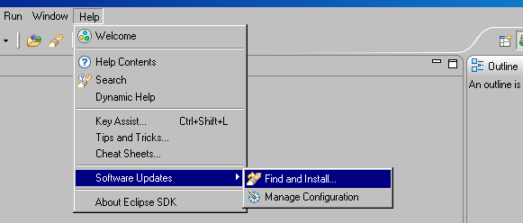
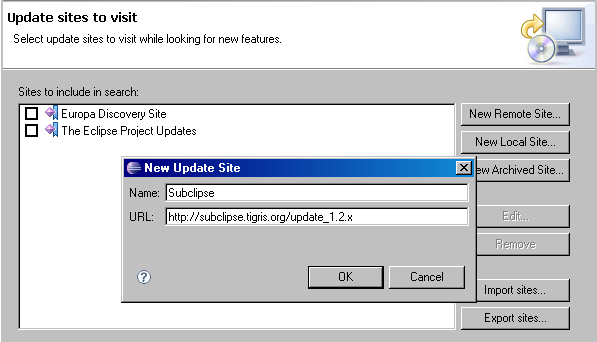
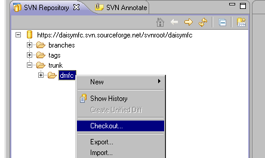
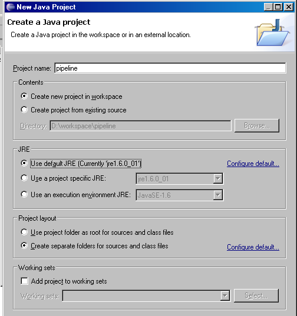
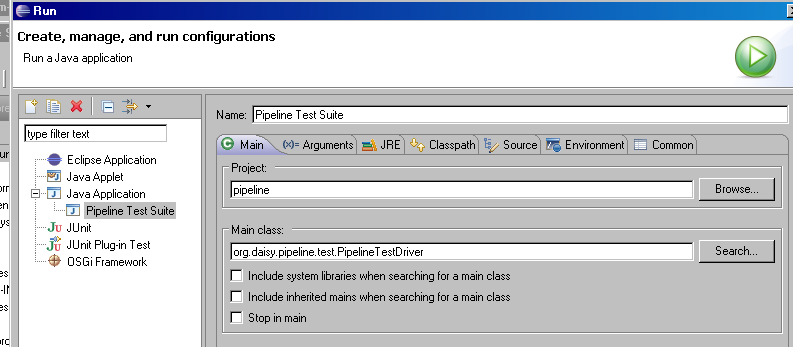

Latest update: 2007-07-02
This document summarizes the steps needed to get and run the Daisy Pipeline code.
As such, this document is primarily intended for developers who want to run (and develop on) the latest code from the Pipeline trunk, or another branch.
The guide uses Eclipse (3.3) as the IDE of choice.
This section describes how to get and configure the DAISY Pipeline "Core", i.e. the Pipeline sans its RCP GUI.
Get the Eclipse IDE from Eclipse Downloads section.
Since version 3.3 (Europa) of Eclipse, there are several different versions to choose from; this guide uses the "Eclipse Classic" version.
Install Eclipse by extracting it to a folder of your choice.
The Pipeline Sourceforge project uses Subversion (SVN) as the repository format.
Since Eclipse (at least at the time of writing) only supports CVS natively, an SVN plugin must be installed in order to communicate with the Pipeline repository.
Use the software update mechanism in Eclipse and create a new update site.
Set the URL to http://subclipse.tigris.org/update_1.2.x (This value at time of writing, may have changed since then, check subclipse.tigris.org).
If you are behind a proxy, you need to set the proxy values in the Network Connections page in the Eclipse Preferences (Window menu, Preferences item, filter on "proxy").
The update manager will search for plugins at subclipse.tigris.org, and return a list of choices. Select the subclipse plugin. You can safely uncheck the Integrations (optional) item.
The update manager will download all needed libraries, and ask you to restart.
Confirm that the SVN plugin is now installed by selecting Window menu, Open Perspective, Other..., and then assuring that "SVN Repository Exploring" is available in the list.
Move to the SVN Perspective (Window, Open Perspective...) and create a new repository location.
The URL is https://daisymfc.svn.sourceforge.net/svnroot/daisymfc.
If you get a RA layer request failed message, you are probably behind a proxy, and need to set the Subversion proxy settings.
Open the branch you would like to checkout (such as branches/stable), select the module (i.e. 'dmfc') and choose "Checkout..." from the context menu.(Note: the name DMFC is the former name of DAISY Pipeline.)
If you just want to run the pipeline, use the 'branches/stable' branch. More active (= possibly unstable) development occurs in the 'trunk'. Decidedly unstable work happens in experimental branches, so normally the trunk should be ok. If in doubt, ask your nearest Pipeline Core Team Representative™.
Select "Check out as a project configured using the New Project Wizard" in the Checkout dialog.
In the first page of the New Project wizard, select "Java Project".
In the second page, give the project the name "pipeline". Select separate folders for source and class files.
Select finish and wait for the download to complete.
The SVN checkout includes the Eclipse .project file that Eclipse uses to set classpath and 3d party library dependencies. So the project should be pretty much ready to go once the SVN dump is complete.
The Java Perspective Package Explorer should have the src and transformers directories shown as source containers (a special icon for these folder items). There shold be a bunch of 3d party libraries in the "Referenced libraries" item.
You can confirm that your Pipeline environment works by creating a Run Profile for the bundled Pipeline test suite.
Create a new Run Configuration (Run menu, Open Run Dialog).
Select the Java Application type. Call it "Pipeline Test Suite". Select PipelineTestDriver as the main class.
In the arguments tab, add the following string as Program Arguments: ${project_loc}/samples ${project_loc}/scripts

Click apply and close, dont run yet.
Instead, open the org.daisy.pipeline.test.PipelineTestDriver class and make sure that one test is decommented in the getTests() method. Select for example OPSCreator1. (It will take a bit too long to run all the tests at this time.)
Now go back to Run and run the Pipeline Test Suite configuration. If you are set up correctly, the Console View will report a succesful run (and also a series of "No test for script" messages, which should be ignored.)
When you are developing a Transformer, it is recommended to do so against tests in the test suite. You are all set up for this now.
Similarly to what you did in the test suite run above, create a Run Configuration for the Pipeline CommandLineUI class.
Create a new Java Application Run Profile called Pipeline. Set org.daisy.pipeline.ui.CommandLineUI as the main class.
The Arguments tab now needs to be changed everytime you want to run a new script or run a script against new input.
The following program arguments runs the DTBookValidator Script against an item in the /samples/ folder:
${workspace_loc}/pipeline/scripts/validation/simple/DTBookValidator.taskScript
--input=${workspace_loc}/pipeline/samples/input/dtbook/dontworrybehappy.xml
If you setup and run the CommandLineUI Configuration exactly as above, you should get the following message in the console:
[DEBUG, Pipeline Core] Loading Transformer Validator (class int_daisy_validator.ValidatorDriver)
[DEBUG, Pipeline Core] Transformer loaded from file:/D:/workspace/pipeline/transformers/
[STATE] Task DTBook Validator just started
[STATE] Transformer Validator just started
[INFO, Validator] Validating a Dtbook document.
[DEBUG, Validator] Completed full validation of input fileset.
[INFO, Validator] Validation completed in 0.0 seconds.
[INFO, Validator] 0 issues were reported by validators.
[INFO, Validator] Congratulations!
[STATE] Transformer Validator just stopped
[STATE] Task DTBook Validator just stopped
This section describes how to get and configure the RCP Pipeline GUI and run it as a front end for the Pipeline Core.
This section remains to be written.